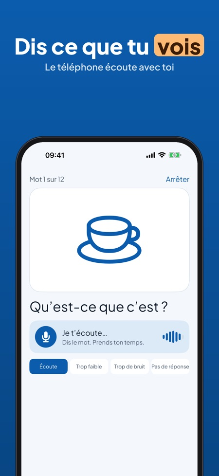
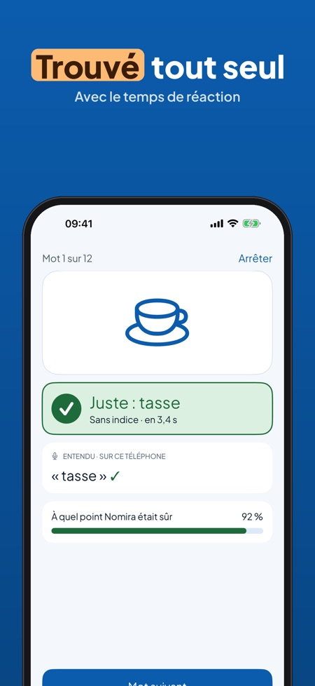
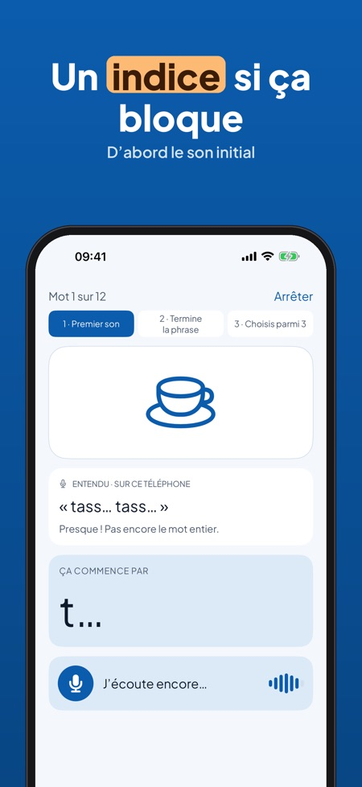

Vois l’image, dis le mot. Nouveau pour les fêtes : 16 mots sur la famille et le temps passé ensemble, ouverts sans achat. Regarde l’image, dis le mot et entraîne-toi avec ta famille ou ton aidant.



Nomira aide les personnes aphasiques à s’exercer chaque jour avec les mots. Tu vois une image et tu dis le mot à voix haute. Nomira écoute sur le téléphone et montre si le mot a été entendu. Si le mot ne vient pas, un indice arrive : le premier son, une phrase à compléter, puis trois mots au choix.
La série Cuisine de 15 mots, l’écoute, les trois indices, le temps de réaction, les progrès de la semaine et le mode où tu indiques toi-même si c’était juste s’utilisent sans achat. Nomira Plus est un achat unique : les 10 séries, verbes compris, les progrès des semaines précédentes et le bilan hebdomadaire en PDF, que tu envoies toi-même par mail, Messages ou AirDrop. Sans abonnement, sans pub.
Nomira est une app d’exercice : un complément aux séances d’orthophonie, pas un remplacement. Elle ne pose aucun diagnostic et ne soigne rien. La reconnaissance peut se tromper ; tu décides toujours. La parole est reconnue sur le téléphone ; aucun son n’est enregistré ni envoyé. Sans micro, tu indiques toi-même si c’était juste.